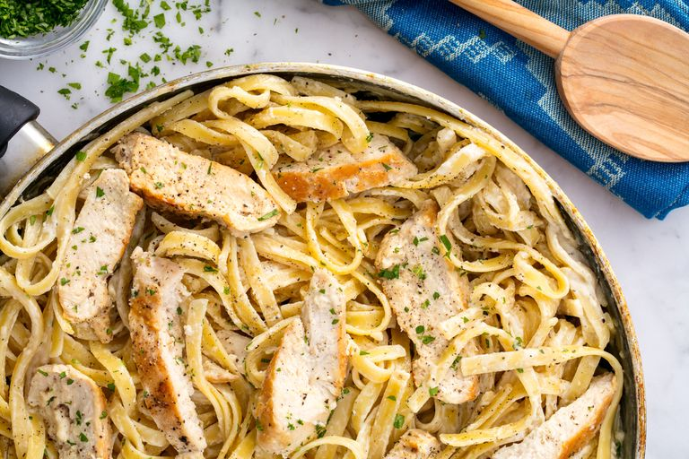

Alfredo

Description
Fiona's favourite Alfredo recipe
A classic from Italy
Ingredients
2 tbsp. extra-virgin olive oil
2 boneless skinless chicken breasts
Freshly ground black pepper
1 1/2 c. low-sodium chicken broth
1 c. freshly grated Parmesan
Freshly chopped parsley, for garnish
Steps
In a large skillet over medium-high heat, heat oil. Add chicken and season with salt and pepper. Cook until golden and cooked through, 8 minutes per side. Let rest 10 minutes, then slice.
Add milk, broth, and garlic to skillet. Season with salt and pepper and bring to a simmer. Add fettuccine, stirring frequently for about 3 minutes. Let cook until al dente, 8 minutes more.
Stir in heavy cream and Parmesan until combined. Simmer until sauce thickens.
Remove from heat and stir in sliced chicken. Garnish with parsley.